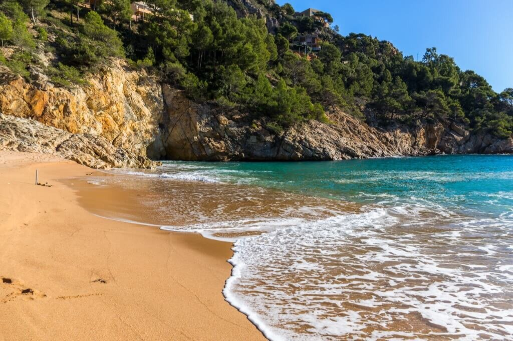
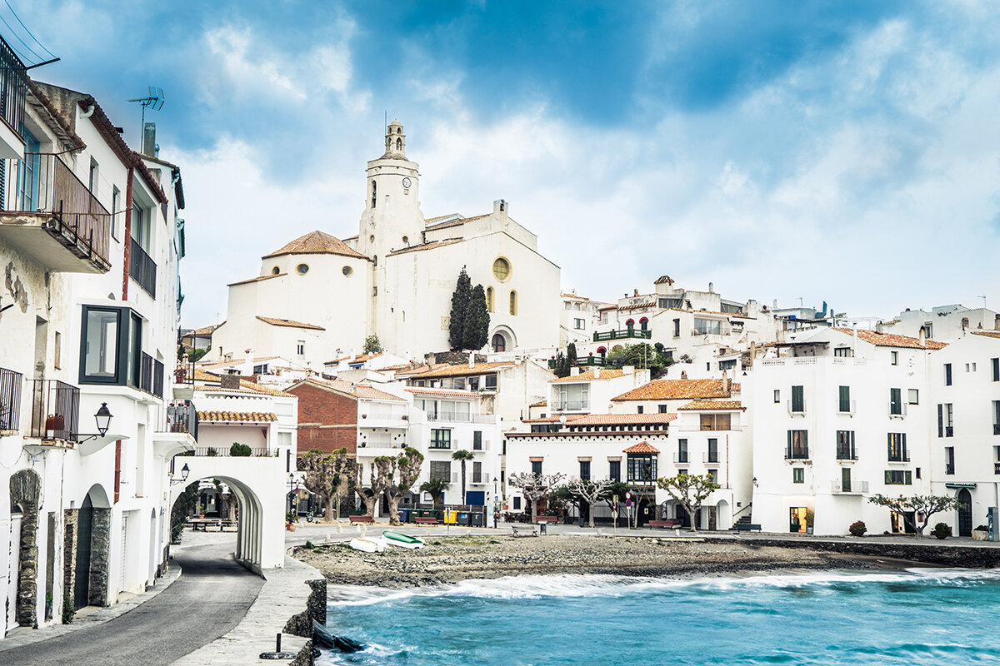

Qué ver en la Costa Brava
La Costa Brava es una de las zonas costeras más bellas que podemos encontrar en nuestro país. Calas y playas de aguas cristalinas, preciosos pueblos y paisajes de ensueño te esperan en este rincón de Cataluña. Un destino ideal para visitar en cualquier época del año y que no te defraudará.


Una de las calas más bellas que podemos encontrar en los alrededores de Tossa de Mar es Cala Pola. Está situada entre altos acantilados y cuenta con todos los servicios necesarios para disfrutar de un tranquilo día a orillas del mar Mediterráneo. Es de arena gruesa y las aguas que la bañan tienen un precioso color azul turquesa.